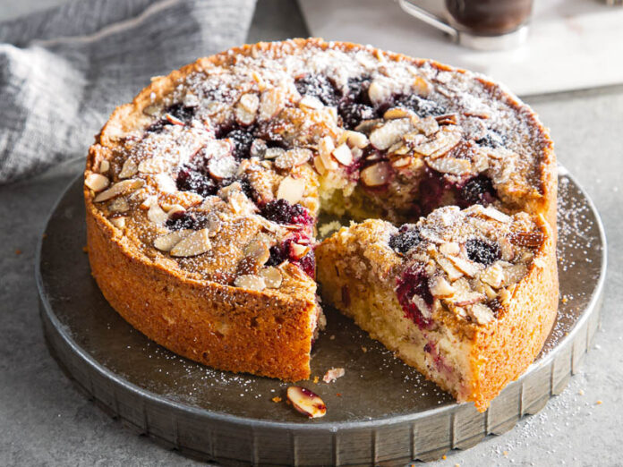

Raspberry Frangipane Tart
Home Page

Raspberry Frangipane Tart
A raspberry frangipane tart is a classic French-inspired dessert featuring a buttery shortcrust pastry filled with almond-flavoured frangipane and tart raspberry jam, baked until golden and fragrant. It’s crisp on the outside, soft inside, and beautifully balanced between sweet and nutty.
Inredients
For the Shortcrust Pastry:
- 250g plain flour
- 125g unsalted butter (cold, cubed)
- 1½ tsp baking powder
- 75g icing sugar
- 1 large egg yolk
- 2–3 tbsp cold water
- Pinch of salt
For the Frangipane Filling:
- 100g unsalted butter (softened)
- 100g caster sugar
- 2 large eggs
- 100g ground almonds
- 2 tbsp plain flour
- 1 tsp almond extract (optional)
For the Raspberry Layer:
- 150g raspberry jam
- 100g fresh raspberries (plus extra for decoration, optional)
- 1 tsp vanilla extract
Directions
- In a bowl, mix the flour, icing sugar, and salt. Rub in the butter with your fingertips until it resembles fine breadcrumbs. Add the egg yolk and enough cold water to bring the dough together. Form into a disk, wrap in cling film, and chill for 30 minutes.
- Warm the raspberry jam gently in a small saucepan until loosened. Set aside to cool slightly.
- Set to 180°C (350°F). Roll out the chilled pastry on a floured surface and line a 23cm tart tin. Trim the edges and prick the base with a fork. Chill for 10 more minutes.
- Line the pastry case with parchment and baking beans. Bake for 15 minutes, remove the beans, and bake another 5–7 minutes until lightly golden. Cool slightly.
- Beat the butter and sugar until pale and fluffy. Add the eggs one at a time, then mix in the ground almonds, flour, and almond extract.
- Spread the jam evenly over the cooled pastry base. Spoon the frangipane mixture over the top and smooth it out. Scatter fresh raspberries over the filling if desired.
- Bake for 30–35 minutes, until the frangipane is golden and springs back when touched. Cool in the tin.
- Dust with icing sugar and serve warm or at room temperature — optionally with whipped cream or crème fraîche.